9 h
9 h
By car
Český Krumlov and Hluboká Castle
Hluboká Castle · Český Krumlov
- Historic
- Nature
from11,407 CZKPer car · up to 4 people · groups of 5–8: Starianávrh
A ready-made trip or your own route. One price for the whole car – Tesla for up to 4, Staria for up to 8.návrh
Private day and two-day trips from Prague by car with an English-speaking driver, and a guide on request – across the Czech Republic and to Germany, Austria and other neighbouring countries. In Prague we offer walking tours with a licensed guide.
The price is for the whole car with a driver – the more of you, the less per person. For up to 4 people the Tesla Model Y is cheaper; for 5–8, the Hyundai Staria.návrh
9 hHluboká Castle · Český Krumlov
from11,407 CZKPer car · up to 4 people · groups of 5–8: Starianávrh
 4 h
4 hSedlec Ossuary · St. Barbara’s Cathedral
from5,354 CZKPer car · up to 4 people · groups of 5–8: Starianávrh
 8 h 30 min
8 h 30 minPravčická Gate · Bastei Bridge (Germany)
from9,884 CZKPer car · up to 4 people · groups of 5–8: Starianávrh
 8 h 30 min
8 h 30 minPirna · Dresden
from9,982 CZKPer car · up to 4 people · groups of 5–8: Starianávrh
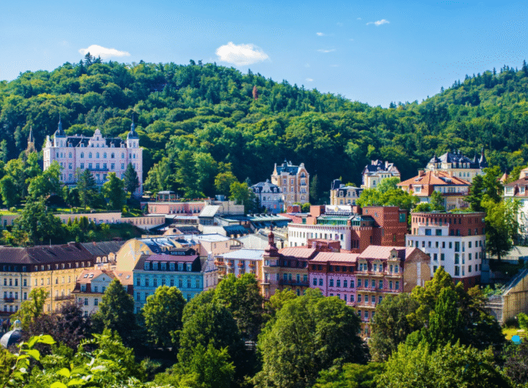
7 h 30 minKarlovy Vary · Loket Castle
from9,061 CZKPer car · up to 4 people · groups of 5–8: Starianávrh
Prague Castle · Nový Svět · Petřín Hill
8,500 CZKWhole private group · up to 4 · guide included
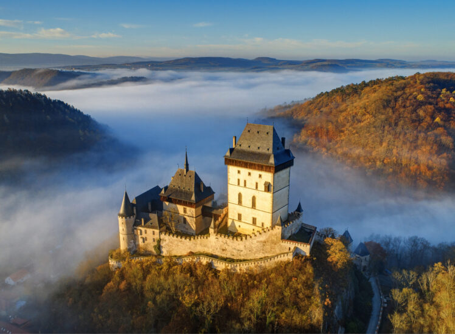
5 hKarlštejn Castle · Velká Amerika Quarry
from3,282 CZKPer car · up to 4 people · groups of 5–8: Starianávrh
1 / 7
All 26 trips from PraguePreview note: “from X CZK per car” on the cards is the Tesla Model Y price (Robert, 26 Oct, O4: no car switch; the Staria price is on the trip page and in the planner). Shown here as 0.8 × the Staria price rounded to whole CZK; in production the server calculates it with the same function and the Tesla rates (27 CZK/km, 5.6 CZK/min, 80 CZK/stop; overnight stay and minimum order are not multiplied) – check values: Kutná Hora 5,319 CZK, Český Krumlov 11,335 CZK, Karlštejn 3,266 CZK (×0.8 would give 5,354 / 11,407 / 3,282).
Pick the places, and the planner shows you the route, the time and the price for the whole car right away.
Enter it in the planner or send it to us. We take care of the driving, the navigation and speaking English.
Castles, nature, smaller towns and local restaurants, based on your interests.
We pick you up wherever you need, and you know the price for the whole car in advance.
Start with a place you want to see – the planner calculates the route and the price for the whole car:
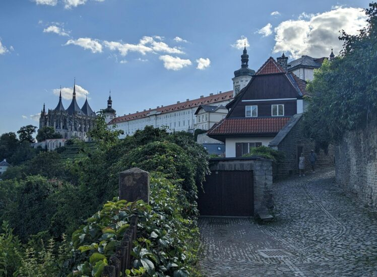
1 h 18 min Kutná HoraUNESCO silver town · bone chapel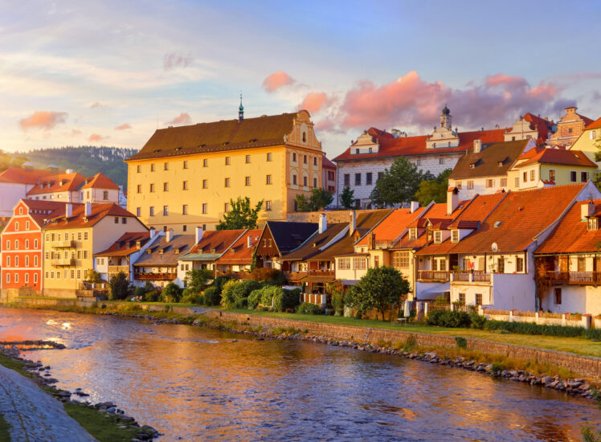
2 h 22 min Český KrumlovUNESCO old town on a Vltava bend 47 min
Karlštejn CastleCharles IV’s castle for the crown jewels
47 min
Karlštejn CastleCharles IV’s castle for the crown jewels
 1 h 52 min
DresdenBaroque old town on the Elbe
1 h 52 min
DresdenBaroque old town on the Elbe
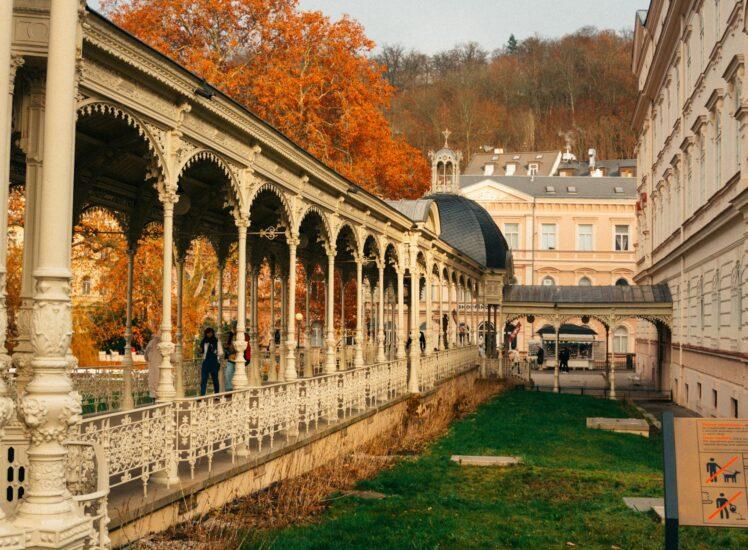
1 h 48 min Karlovy VarySpa colonnades & hot springs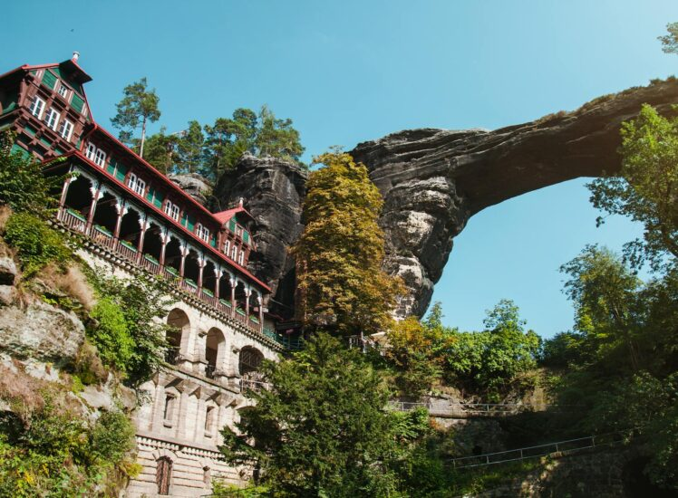
2 h Bohemian SwitzerlandEurope’s largest sandstone arch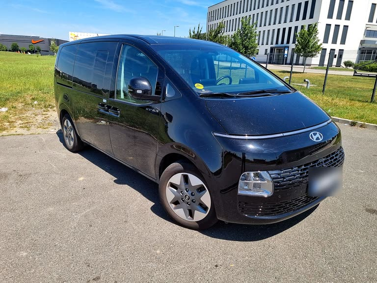
Rent a car without a driver for a few days or several weeks from our sister company Popojedu in Prague‑Čakovice – a Hyundai Staria and other cars. Details on the Popojedu website.
Rent a car at Popojedu (opens in a new tab)
Sister company Popojedu s.r.o. · its own rental terms
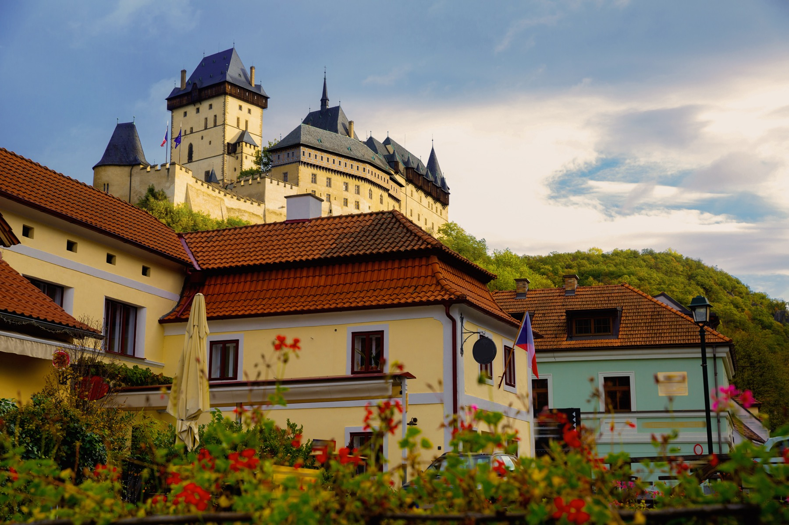
Your driver looks after you all the way: tips, a helping hand and a quick call ahead wherever needed – restaurants, sights, viewpoints.
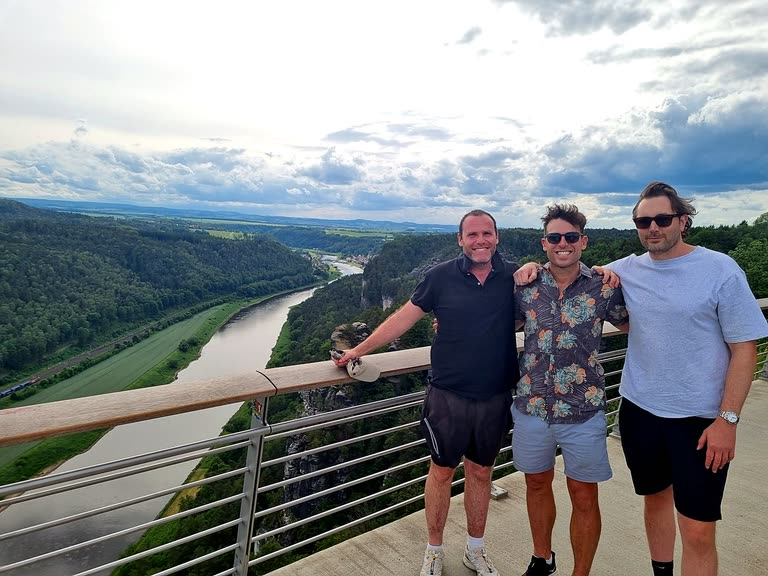
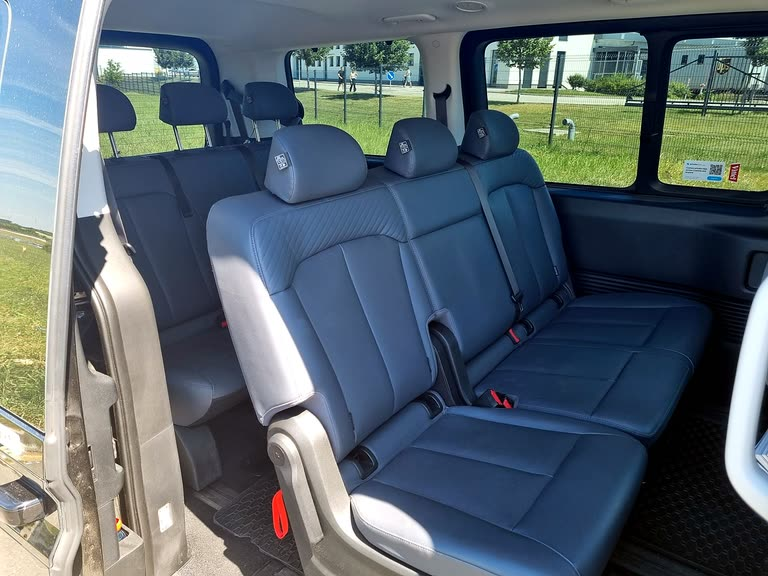
Every PrivateToursCzech car trip from Prague comes with a local, English-speaking private driver who knows the places you visit. On the way your driver tells you what is worth seeing in the time you have, the best viewpoints and where to eat.
Drives, shares tips on the way, helps with tickets and lunch.
Stays with you on foot at the stops and shows you around the sights as a local.
Expert commentary: meets you on site, or rides with you in the car all day.
What does the driver do? Drives, shares local tips on the way, helps with tickets and lunch and is on hand whenever you need them. Included in the price.
What does a driver-guide add? Your driver stays with you on foot at every stop and shows you around the sights – as a local, not as a licensed guide. +200 CZK per hour of the trip, added to the whole-car price.
When do I need a licensed guide? For expert commentary in the old towns and at the sights. We can arrange a licensed guide on request: they meet you on site where available, or ride with you in the car all day (the guide takes one seat, so up to 7 guests in the Staria, 3 in the Teslanávrh). We send you a price for your date and usually confirm within 24 hours; if no guide is available, your trip goes ahead as planned and you pay nothing for the guide. You pay the guide directly. Castle interiors are shown by the castles’ own guides.
Not sure? Book with your driver – add a driver-guide when you book, or ask for a licensed guide.
How we choose drivers: our drivers are carefully selected, follow our driver safety standards and are checked regularly.
Two cars: Hyundai Staria 4×4 for up to 8 people, or Tesla Model Y for up to 4návrh
Staria: plenty of room for luggage, air conditioning, leather seats, USB and free water. Tesla Model Y: cheaper, up to 4 bags and 2 child seats. You pick the car in the planner.návrh
Safety and comfort
Free Britax Römer child seats, modern safety systems, drivers trained to our standards.
Driver SafetyOne price for the whole car
You know the price in advance, and it doesn’t change with the number of people. Pay your driver on the day, in cash or by card.
+200 CZK per hour of the trip, added when you book.
On site, or with you in the car all day (the guide takes one seat, so up to 7 guests in the Staria, 3 in the Teslanávrh). We send you a price for your date.
Britax Römer seats for all ages, at most 2 in the Tesla Model Ynávrh.
You decide where to stop and for how long. You see the price for the whole car right away.
Best Day Trips from Prague 2026: Top 12
Start here
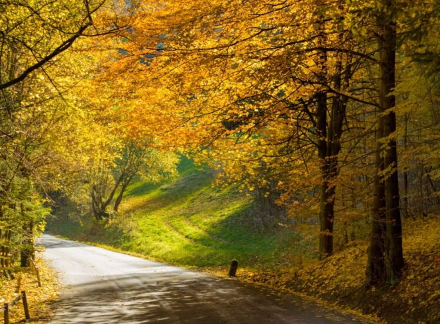
How Much Does a Private Day Trip from Prague Cost?One price for the whole car for up to 8 people: what’s included and what our ready-made trips cost.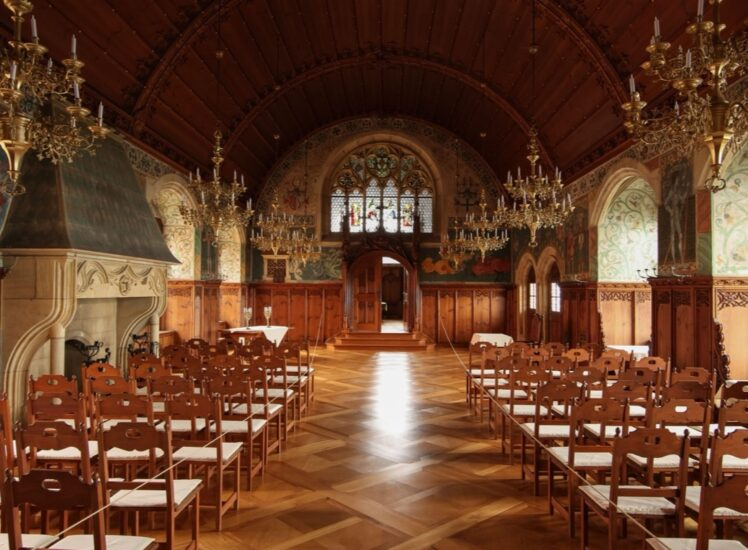
Private Driver or Tour Guide in Prague: What’s the Difference?What an English-speaking driver does on a day trip, and what a licensed guide adds. 5 Best Day Trips from Prague Compared (2026)Krumlov, Kutná Hora, Dresden and more side by side: time, price and who each trip suits.
5 Best Day Trips from Prague Compared (2026)Krumlov, Kutná Hora, Dresden and more side by side: time, price and who each trip suits.
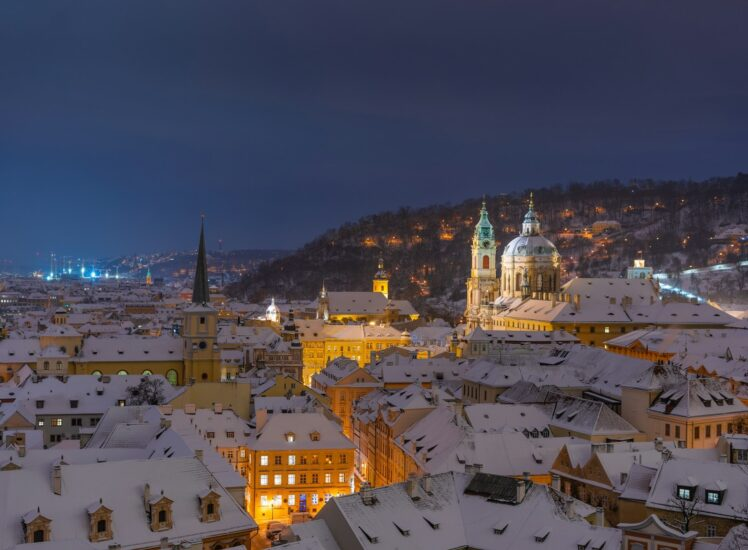
Prague in Winter: December, January & FebruaryWinter opening hours, Masopust 2027 and day trips that work in the cold. Prague Christmas Markets 2026: Dates, Food & TipsWhere and when the markets take place, and what to try.
Lidice Memorial: Visiting the Site of the 1942 Tragedy from PragueHow to get to Lidice and what to see there.
Prague Christmas Markets 2026: Dates, Food & TipsWhere and when the markets take place, and what to try.
Lidice Memorial: Visiting the Site of the 1942 Tragedy from PragueHow to get to Lidice and what to see there.